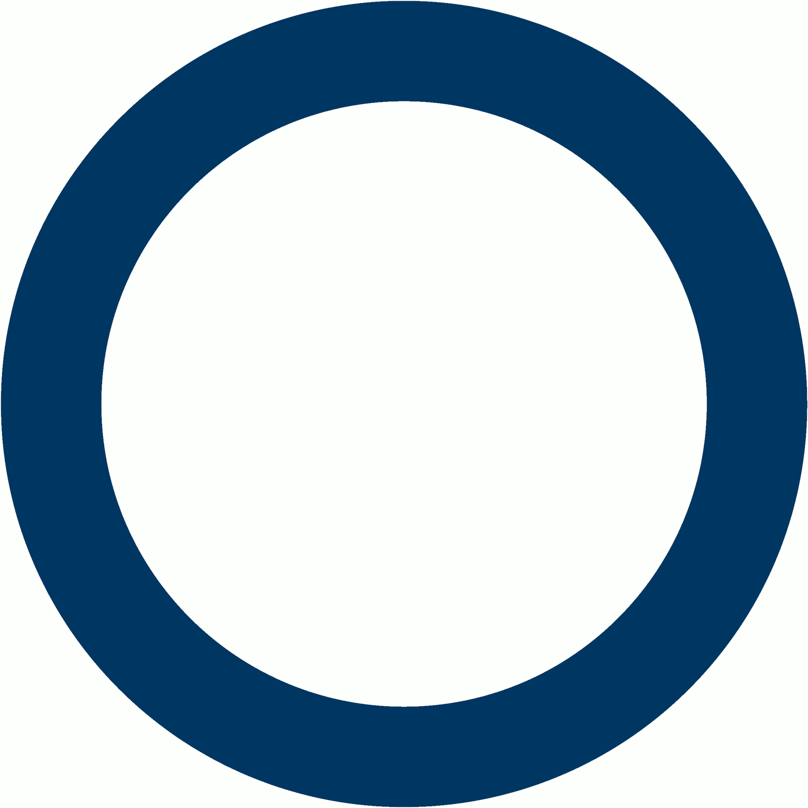
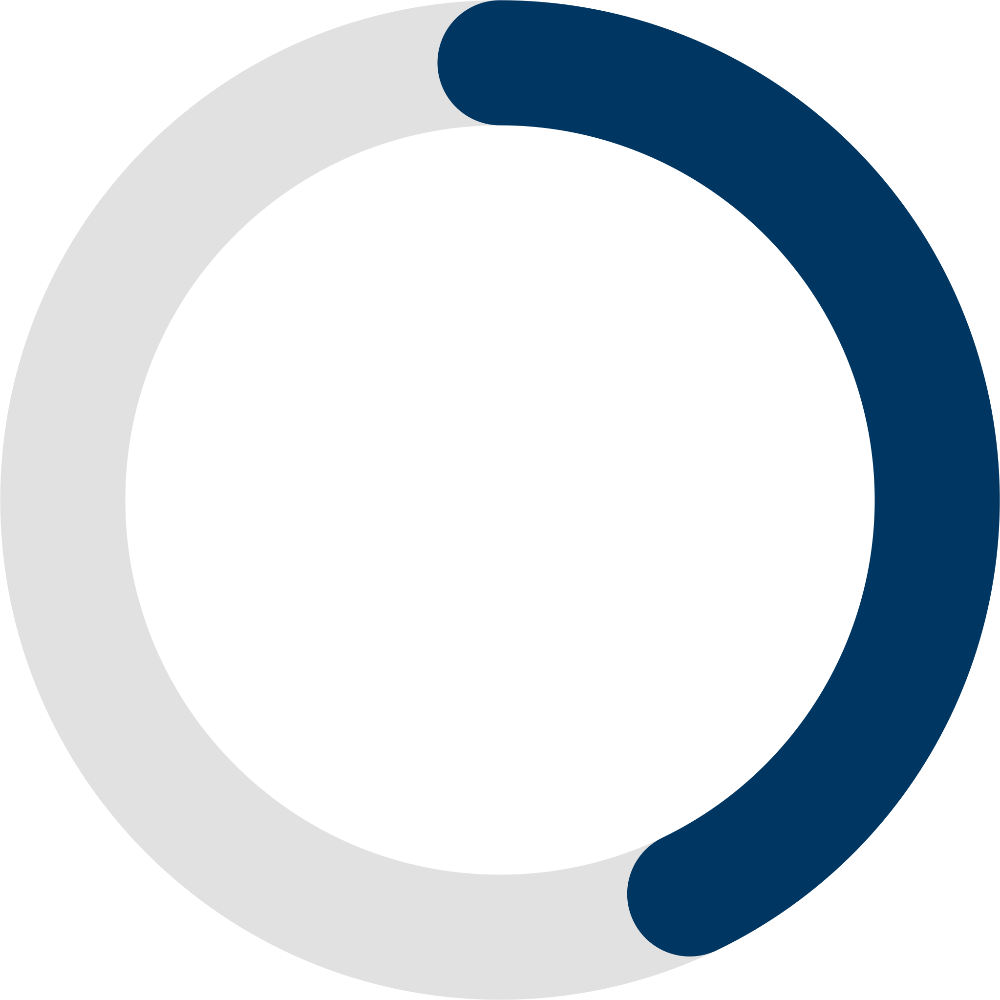
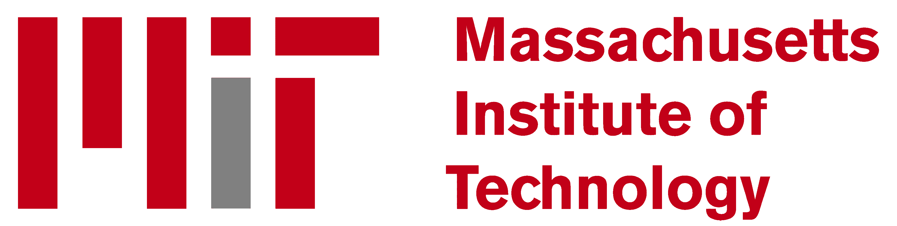

Martí Pedemonte Bernat
Quantitative Modeller @ BKW | MSc ETHZ in Physics | Thesis @ MIT | la Caixa 2021 fellow
View CVPersonal Profile
I bring a strong mathematical and computational background to complex technical problems. My experience spans data science, machine learning, statistical analysis, quantitative modelling and software development: from research and problem formulation through implementation, testing and validation. I primarily use Python and SQL, hold an MSc in Physics from ETH Zürich with thesis research at MIT, and have three bachelor's degrees in Computer Science, Mathematics and Physics.
In my free time, I enjoy going to concerts with my close ones, reading a good book, going to the gym, doing sports with good company, and traveling to discover new places, cultures, and people.
Basic Information
Catalan

Spanish
English
German

Work Experience
January 2026 - Present
Quantitative Modeller
BKW AG
Led development and validation of a multi-market battery energy storage (BESS) valuation model for live long-term contracts and portfolio valuation.
The solver-independent sparse LP/MILP formulation covered day-ahead, intraday and ancillary services, with configurable contractual and physical constraints, and solves 10-year hourly optimisations in under 15 seconds.
May 2024 - December 2025
Quantitative Analyst
BKW AG
Co-owned gas-storage valuation and hedging models for 15+ storages across four markets and developed capture-rate valuation for 300+ renewable and battery assets.
Modelled intrinsic and extrinsic gas-storage value and market-compatible hedges using LP/MILP and Monte Carlo. Designed the MATLAB architecture and Snowflake schema, and automated deal capture, monitoring and data pipelines.
Developed asset-specific capture-rate and valuation methods incorporating technology, region and contract structure, with independent benchmark validation and automated Looker reporting.
May 2023 - December 2023

Research Assistant
Massachusetts Institute of Technology (MIT)
Analysis of rare decays of the Higgs boson into a photon and a light vector meson.
Continuation of my Master's Thesis. Research under the supervision of Prof. Dr. Christoph M. E. Paus and Dr. Mariarosaria D'Alfonso, within the Particle Physics Collaboration at MIT. This project involved developing a robust framework utilizing Python, C (ROOT), and Bash.
September 2019 - January 2022

Undergraduate Research Assistant
UB Universitat de Barcelona
Three research projects spanning machine learning, quantum optics and nanomaterials.
March 2021 - January 2022: Development of ML software to assist in prescribing treatments for the fertility company Fertypharm.
The project was a collaboration between the Bosch i Gimpera Foundation and the Department of Electronics and Biomedical Engineering of the Universitat de Barcelona, supervised by Dr. Manel López. We developed a software that used machine learning techniques, such as classifiers and regressors, to predict the most effective treatment to maximize the chances of a patient having a positive fetal heart rate after in vitro fertilization. The software was primarily programmed in Python.
December 2019 - July 2021: Assembly of an apparatus for producing and detecting polarization-entangled photons.
The project took place in the Department of Quantum Physics and Astrophysics of the Universitat de Barcelona, under the supervision of Dr. José Maria Gómez. The setup was based on a paper by D. Dehlinger and M. W. Mitchell, that aimed to violate the CHSH Bell inequality as the authors did in a previous paper. We designed and built the coincidence electronic circuit, programmed a microcontroller to count coincident photons and aligned the optical elements to produce and detect the polarization of the photons.
September 2019 - July 2020: Study of ITO nanowires grown on silicon substrates, resulting in co-authorship of a published paper.
The project was conducted in the Department of Electronics and Biomedical Engineering of the Universitat de Barcelona and was supervised by Dr. Manel López. We grew Indium Tin Oxide (ITO) on a silicon substrate via electron beam evaporation (EBE) and studied the properties of the nanowires formed. We analyzed the structures created in different initial conditions (changing the atmospheric composition of the chamber, the temperature and the time of exposition). The understanding of the properties of these structures is relevant to the construction of biomedical sensors.
January 2019 - February 2020
Data Scientist (part-time)
Resistencias Tope S.A.
Development of analytical models for estimating the temperatures of molten salts, culminating in a field trip to Abengoa's solar power plant in the Atacama Desert, Chile.
The project involved creating an analytical model to accurately calculate the temperature difference $\Delta T$ between an electric heating element tube and the surrounding molten salts. It accounted for varying charge $Q$ applied to the heating element, its temperature, and the flow velocity of the molten salts $v$. The study was primarily conducted using Python and Excel.
Education
May 2023 - October 2023
Master's Thesis in Experimental Particle Physics
Massachusetts Institute of Technology (MIT)
ECTS Credits: 30
GPA: 6/6
ETH Physics' Master's Thesis conducted at MIT, under the supervision of Prof. Dr. Christoph M. E. Paus, Prof. Dr. Günther Dissertori and Dr. Mariarosaria D'Alfonso, on rare decays of the Higgs boson into a photon and a vector meson.
A search for the exclusive decays of the Higgs boson to a photon and either a $\phi\mbox{(1020)}$, $\omega\mbox{(782)}$ or $\mathrm{D}^{*}\mbox{(2007)}^{0}$ meson was conducted. The analysis was performed with a pp collision data sample corresponding to an integrated luminosity of $\mbox{39.54}$ $\mathrm{fb}^{-1}$ collected at $s^{\frac12}=\mbox{13 TeV}$ with the CMS detector at the Large Hadron Collider (LHC) in 2018 during Run 2. Four decay channels were explored: $\mathrm{H}\to \phi\gamma$ with further $\phi\to \pi^+\pi^{-}\pi^0$, $\mathrm{H}\to \omega\gamma$ with further $\omega\to \pi^+\pi^-\pi^0$, $\mathrm{H}\to \mathrm{D}^{*0}\gamma$ with further $\mathrm{D}^{*0}\to \mathrm{D}^{0}\pi^{0}/\gamma$, $\mathrm{D}^{0}\to K^{-}\pi^{+}$ and $\mathrm{H}\to \mathrm{D}^{*0}\gamma$ with further $\mathrm{D}^{*0}\to \mathrm{D}^{0}\pi^{0}/\gamma$, $\mathrm{D}^{0}\to K^{-}\pi^{+}\pi^{0}$. Estimated upper limits at a 95% confidence level on the branching fractions of the four Higgs boson decay modes were obtained.
September 2021 - October 2023
MSc ETH in Physics
ETH Zürich
ECTS Credits: 90
GPA: 5.73/6
Courses taken:
- Quantum Field Theory I & II
- Phenomenology of Particle Physics I & II
- General Relativity
- Introduction to String Theory
- The Standard Model of Electroweak Interactions
- Proseminar in Relational Quantum Mechanics
- Semester Project in Beyond the Standard Model EFTs
Master Thesis (30 ECTS) conducted at MIT on rare decays of the Higgs boson.
September 2016 - July 2021
BSc in Computer Science and Software Engineering
UB Universitat de Barcelona
ECTS Credits: 240
GPA: 9.3/10
Excellent with honours in:
- Basic Digital Design
- Software Design
- Data Structure
- Advanced Algorithms
- Artificial Vision
- Workshop on New Uses of Computers
- Embedded Systems Programming
- Operating Systems I
- Operating Systems II
- Networks
- Human Factors and Computing
- Graphics and Data Visualization
Final project (18 ECTS): "Algorithmic Causal Effect Identification", grade: 10/10. arXiv abstract, technical report PDF. causaleffect Python package.
Awarded an extraordinary award.
Awarded the Joaquim Font Award for the best academic record.
September 2014 - July 2020
BSc in Mathematics
UB Universitat de Barcelona
ECTS Credits: 240
GPA: 8.4/10
Excellent with honours in:
- Introduction to Differential Calculus
- Graphs
- Topology and Global Differential Geometry of Surfaces
Final project (18 ECTS): "Global Dynamics of Newton's Method for Complex Polynomials", grade: 9.7/10.
September 2014 - January 2020
BSc in Physics
UB Universitat de Barcelona
ECTS Credits: 240
GPA: 8.5/10
Excellent with honours in:
- Differential Equations and Vector Calculus
- Mathematical Methods for Physics II
- Quantum Physics
- Solid State Physics
- Classical Electrodynamics
- Quantum Mechanics
- Atomic Physics and Radiation
Final project (6 ECTS): "Machine Learning Approach to the Inverse Ising Problem", grade: 8.9/10.
Skills
- Programming
- Python (NumPy, pandas, SciPy, scikit-learn), SQL, MATLAB, C/C++, Bash, Java, R (basic), VBA (basic).
- Web & App Development
- HTML, CSS, JavaScript, Dart & Flutter.
- Modelling & Quant
- LP/MILP optimisation, Monte Carlo simulation, valuation, risk analytics, statistical and time-series modelling, backtesting.
- Statistical & ML
- Regression and classification, tabular reinforcement learning, feature engineering, cross-validation, model validation and calibration, causal inference.
- Energy & Markets
- BESS, gas storage, PPAs and capture rates, day-ahead and intraday markets, ancillary services, hedging.
- Data, BI & Platforms
- Data analysis and modelling, Snowflake, Looker, API integration, Excel.
- Software Engineering
- OOP, unit and integration testing (pytest), profiling and vectorisation, Git, CI/CD (Azure DevOps), Linux, AI coding agents, LaTeX.
- Languages
- Catalan (native), Spanish (native), English (C2), German (B1).
Awards
- 2022: Awarded an extraordinary award for outstanding academic performance in my BSc in Computer Science and Software Engineering.
- 2021: Awarded the Joaquim Font Award (award announcement) for being the top-ranked graduate in the BSc in Computer Science and Software Engineering.
- 2021: Awarded the La Caixa Fellowship 2021 for postgraduate studies at ETH Zürich (La Caixa profile), among more than 1300 candidates.
- 2014-2021: Obtained Excellent with Honours in 22 courses across the three BSc programs at UB.
- 2011-2014: Mathematical Kangaroo Competition by the Catalan Mathematics Society (more than 6000 participants): 2012 - Top 1.9%, 2013 - Top 0.6%, 2014 - Top 0.7%.
Additional Information
- 2012-2021: Private teacher for students both in High School and University.
- 2015-2019: Speaker in university orientation sessions in High School.
- 2014: Took the PAU tests. Grade: 12.93/14.
- 2021-2022: Studied German in the UZH/ETH Zürich Sprachenzentrum.
- 2020: Cambridge's Certificate of Proficiency in English (CPE). Grade: 218 (B).
- 2019: TOEFL iBT Test. Grade: 108.
- 2018: Yacht captain license.
- 2016: Driving license.